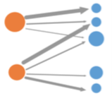

Visual Exploration of Media Transparency for Data Journalists: Problem Characterization and Abstraction

FFH (2016)
Authors
Christina Niederer, Alexander Rind, Wolfgang Aigner, Julian Ausserhofer, Robert Gutounig, Michael Sedlmair
Materials
Abstract
Today, journalists increasingly deal with complex, large, and heterogeneous datasets and, thus, face challenges in integration, wrangling, analysis, and reporting these data. Besides, the lack of money, time, and skills influence their journalistic work. Information visualization and visual analytics offer possibilities to support data journalists. This paper contributes to an overview of a possible characterization and abstraction of certain aspects of data-driven journalism in Austria. A case study was conducted based on the dataset of media transparency in Austria. We conducted four semi- structured interviews with Austrian data journalists, as well as an exploratory data analysis of the media transparency dataset. To categorize our findings we used Munzner ́s analytical framework and the Data-User-Task Design Triangle by Miksch and Aigner.